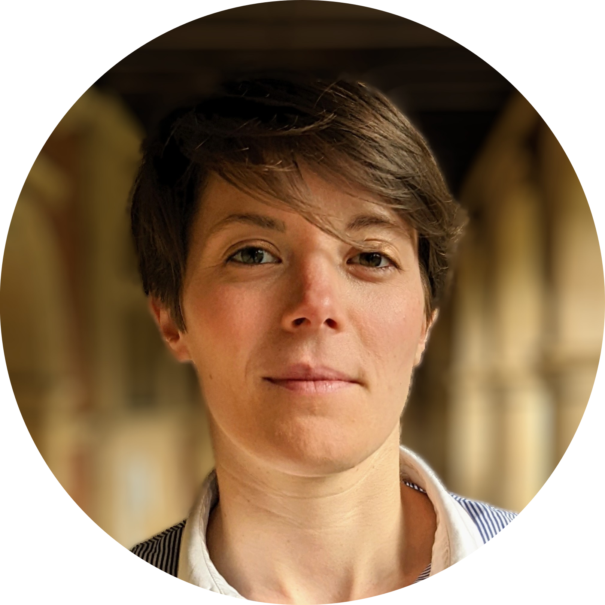
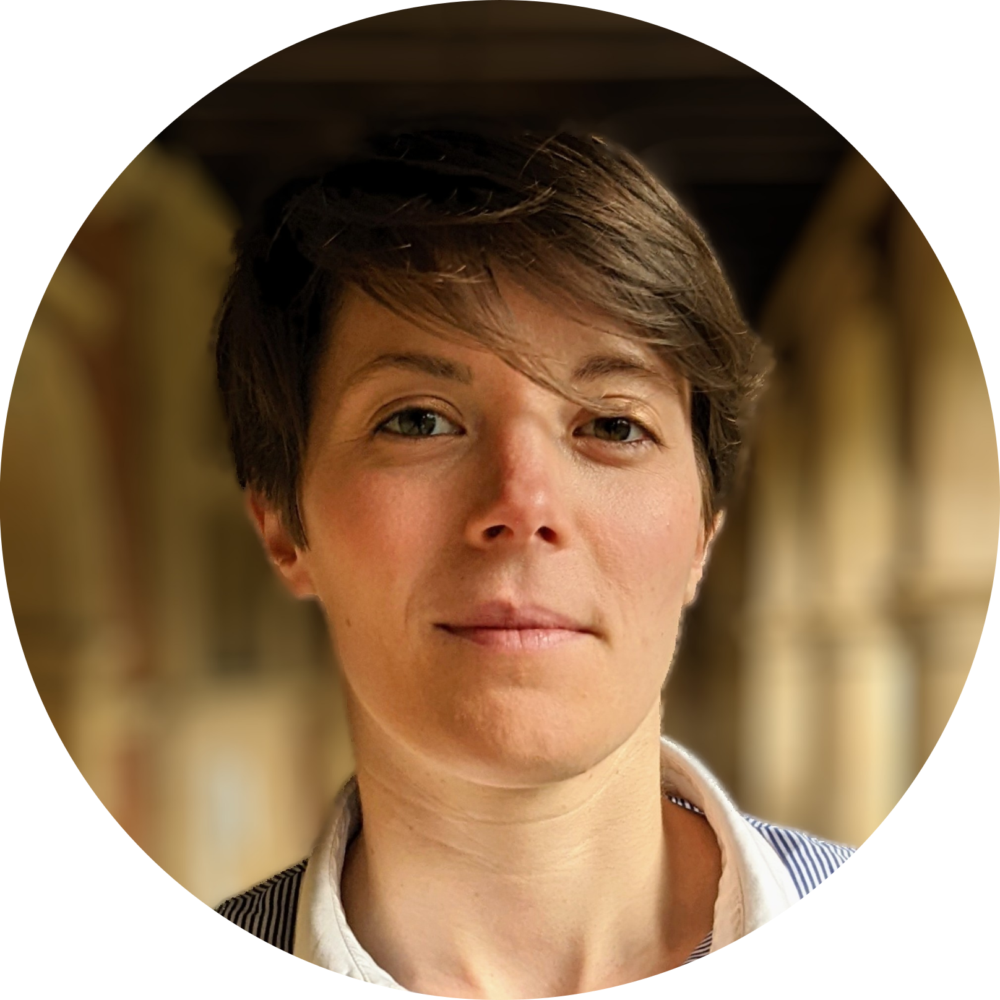
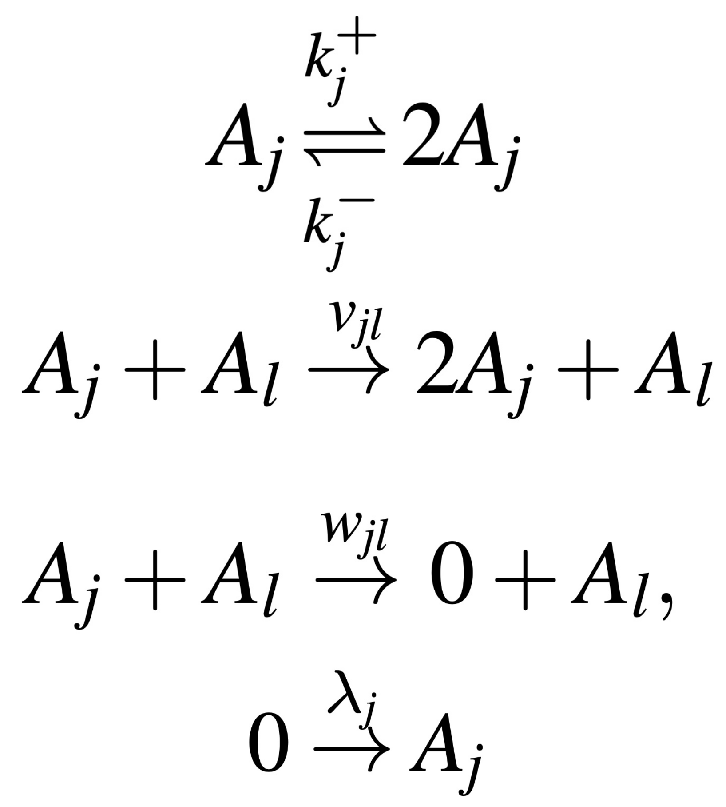
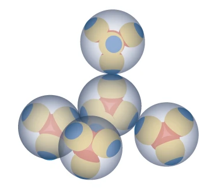
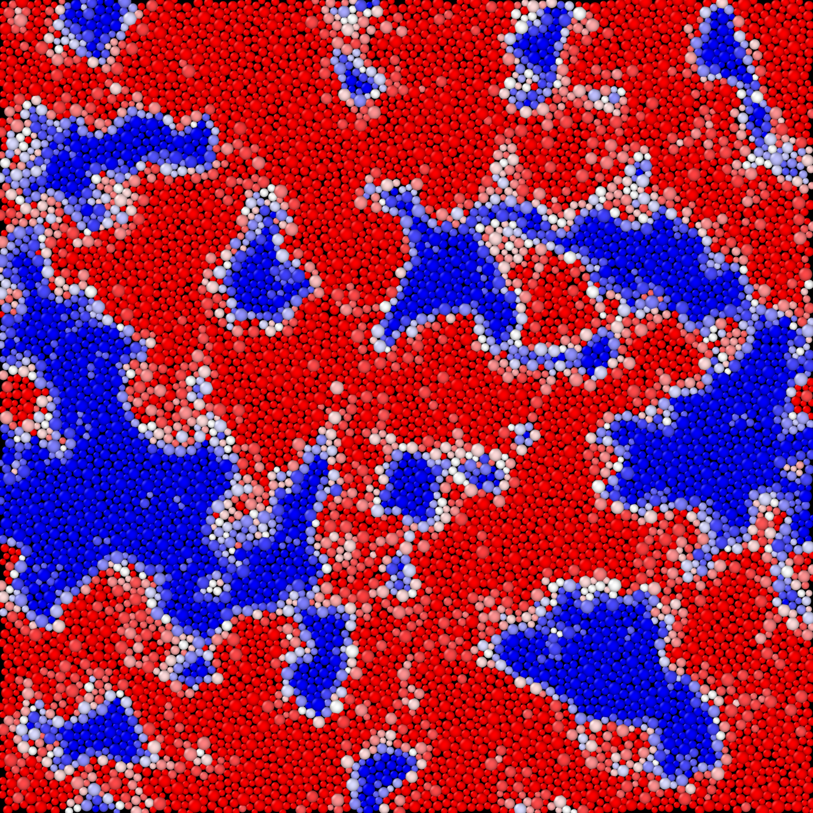
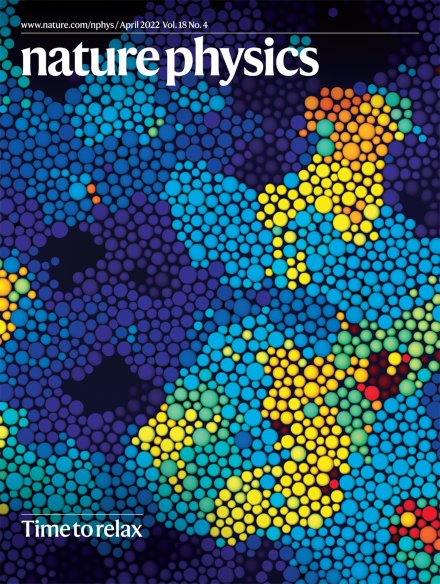

|  |
Camille Scalliet
Research Fellow at the University of Cambridge
+44 1 22 333 7877 |
|  |
Camille Scalliet
Research Fellow at the University of Cambridge
+44 1 22 333 7877 |
|
I am an independent postdoctoral researcher at the University of Cambridge, funded by a Herchel Smith Fellowship and a Fellow of Sidney Sussex College. I am hosted in the Soft Matter Group of the Department of Applied Mathematics and Theoretical Physics.
As a theoretical physicist, I work on various problems in soft and condensed matter, with a focus on the statistical physics of disordered systems. I search for new dynamic and thermodynamic behaviors combining analytical and computational approaches, and investigate how they emerge from disorder and non-equilibrium conditions. In 2022, I was awarded the Young Scientist Prize in Statistical Physics from the International Union for Pure and Applied Physics. I was awarded a L'Oréal-UNESCO For Women in Science Young Talents France Fellowship in 2018. I received my PhD in September 2019 from the University of Montpellier, advised by L. Berthier and F. Zamponi (ENS, Paris). I am an alumni of the Simons Collaboration on Cracking the Glass Problem. I graduated from the Ecole Normale Supérieure de Lyon in 2016. For additional information please visit the Research, Publications, Talks or CV pages. |
|  |
We derive the generalized Lotka-Volterra model recently analyzed in theoretical ecology from a chemical reaction network, and discuss future challenges to develop theories describing emergent behavior in large chemical reaction networks.
E. De Giuli and C. Scalliet, Dynamical mean-field theory: from ecosystems to reaction networks, J. Phys. A: Math. Theor. 55 474002 (2022). |
|  |
I wrote a News & Views on Andreas Neophytou and colleagues' recent article revealing the fascinating topological changes at liquid-liquid phase transitions, recently published in Nature Physics.
C. Scalliet, Water Untangled, Nature Physics (2022). |
|  |
We simulate for the first time the dynamics of supercooled liquids down to the experimental glass transition, over up to 11 decades in time.
C. Scalliet*, B. Guiselin*, and L. Berthier, Thirty milliseconds in the life of a supercooled liquid, Physical Review X 12, 041028 (2022). |
|  |
B. Guiselin*, C. Scalliet*, and L. Berthier,
Microscopic origin of excess wings in relaxation spectra of supercooled liquids, Nature Physics 18, p. 468-472 (2022). See the News & Views by Reiner Zorn. Left: My simulation snapshot on the cover. |